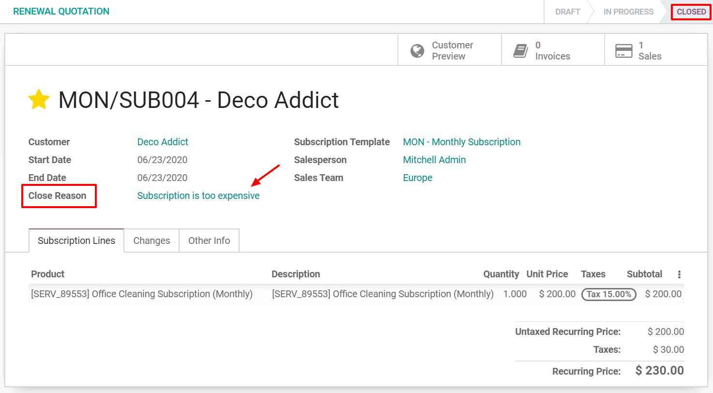
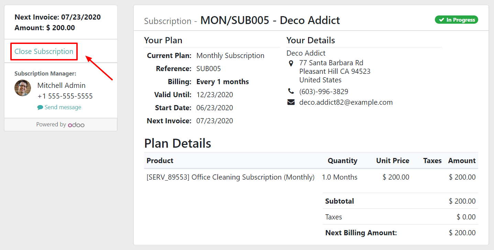
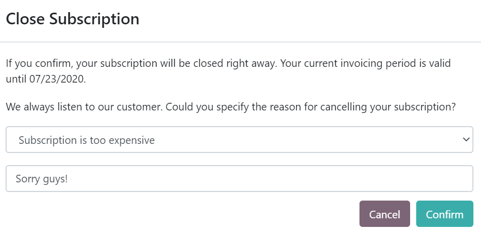
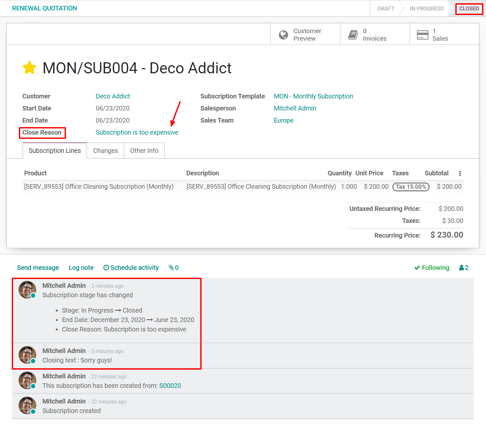

Close a subscription¶
Losing a customer is always difficult, especially if you put a lot of effort into getting them to sign up for your products/services. However, many companies come up with dubious methods to reduce the probability of this happening.
If you adopt such methods, you are among companies that actively and indirectly spread the phobia of subscriptions, who do not think about how negatively dissatisfied customers could impact their business and, who frustrate the customers in a way or another. However, at some point, it is understandable that you do not want your customers to be involved in your subscription status.
If you do not adopt such methods, you are among companies that continue to evolve in a long-term subscription business model, especially in an era of ultra-fast communications between dissatisfied customers, and who retain their customers by making it easier for them to leave if they want to. By giving them the opportunity to close their own subscriptions, your customers do not feel trapped because they subscribed to your products/services.
In summary, the Odoo Subscriptions application gives you the possibility to choose what you want to apply. Indeed, you can decide whether to give your customers the option to close their subscriptions whenever they want to or to restrict this possibility. It depends on you and we will show you how to do that in our amazing application.
Configuration¶
Go to . From there, you can create a new Subscription template or modify an existing one. When editing your template, underneath the Invoicing tab, you have the possibility to activate the option Closable by customer. Once enabled, this option gives your customers the right to close their own subscriptions.

Note
Be sure to check out our documentation on how to Use subscription templates to fully understand the importance of this feature in a basic flow using the Odoo Subscriptions application.
Close your first subscription¶
Administrator view¶
Once confirmed, a quotation becomes a sales order and a new subscription is automatically created. Therefore, this subscription has the status In progress. From there, you have the possibility to close the subscription.

By using the smart button Close, you have to enter a close reason. For example, “Subscription too expensive”, “Subscription does not meet my requirements”, “Subscription reached its end date”, etc. Immediately after confirming your close reason, you can observe that the status of the subscription is now Closed and that the close reason is mentioned on the subscription.
Customer view¶
As previously explained in the Administrator view part, from the subscription form, you also have the possibility to visualize what your customers see when managing their subscriptions thanks to the Customer preview button. In this example, the customer has the choice to close his/her subscription whenever he/she wants to, due to the Close Subscription button.
By using this button, the customer can specify the reason for cancelling his/her subscription and he/she can even leave a message.
By confirming the cancellation, the customer is redirected to his/her portal. The administrator is informed of this modification. Indeed, the status of the subscription becomes Closed and a note appears in the chatter with the new stage, the end date, the close reason, and the closing text added by the customer.
Note
Before closing a subscription, check out our documentation on how to Create a quotation using subscription products to understand how subscriptions are managed in the Odoo Subscriptions application.